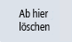
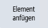
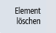

Einleitung
Sie können die einzelnen Konturelemente definieren, aus denen sich die Kontur zusammensetzt.
Folgende Konturelemente stehen Ihnen zur Definition einer Kontur zur Verfügung:
Eine neue Kontur bezieht sich auf den Nullpunkt der Ebene, auf der die Kontur erstellt wird.
Vorgehensweise
 | 1. | Drücken Sie den Softkey "Neue Kontur". Das Eingabefenster für den Startpunkt der Kontur wird geöffnet. |
| | |
| | 2. | Legen Sie den Startpunkt der Kontur fest, indem Sie den gewünschten Punkt im 3D-Modell auswählen. Der Startpunkt wird im 3D-Modell hervorgehoben. |
| | 3. | Aktivieren Sie das Feld "Startrichtung" und wählen Sie am 3D-Modell ein Element, das mit dem Startpunkt verbunden werden kann. Startpunkt und Elemente können in der Regel verbunden werden, wenn sie bei Draufsicht auf die Ebene als verbunden erscheinen. Ein Höhenunterschied spielt keine Rolle. Grundsätzlich sind alle hervorgehobenen Kanten als Elemente wählbar. |
 | 4. | Bestätigen Sie die Auswahl mit "Übernehmen". Die Kontur wird nun automatisch um weitere passende Elemente ergänzt, um die weitere Eingabe zu erleichtern. |
|  | 5. | Entspricht die erkannte Kontur nicht Ihren Erwartungen, können Sie eines der Elemente am Modell wählen, um alle nachfolgenden Elemente zu löschen. Drücken Sie auf "Ab hier löschen", um mehrere Konturelemente zu löschen. |
|  | 6. | Anschließend besteht die Möglichkeit gezielt ein weiteres Nachfolgeelement anzufügen. Drücken Sie auf "Element anfügen", um ein weiteres Nachfolgeelement anzufügen. |
|  | 7. | Sie können auch einzelne Elemente löschen, um einzelne Punkte der Kontur zu überspringen. Drücken Sie auf "Element löschen", um einzelne Punkte der Kontur zu überspringen. |
| | 8. | Drücken Sie auf "Übernehmen", um das neu angelegte Konturelement in die Programmansicht zu übernehmen. |
| Hinweis |
Um eine Kontur nachträglich zu modifizieren, markieren Sie die jeweilige Kontur in der Bearbeitungsliste und drücken Sie auf den Softkey "Kontur ändern. |